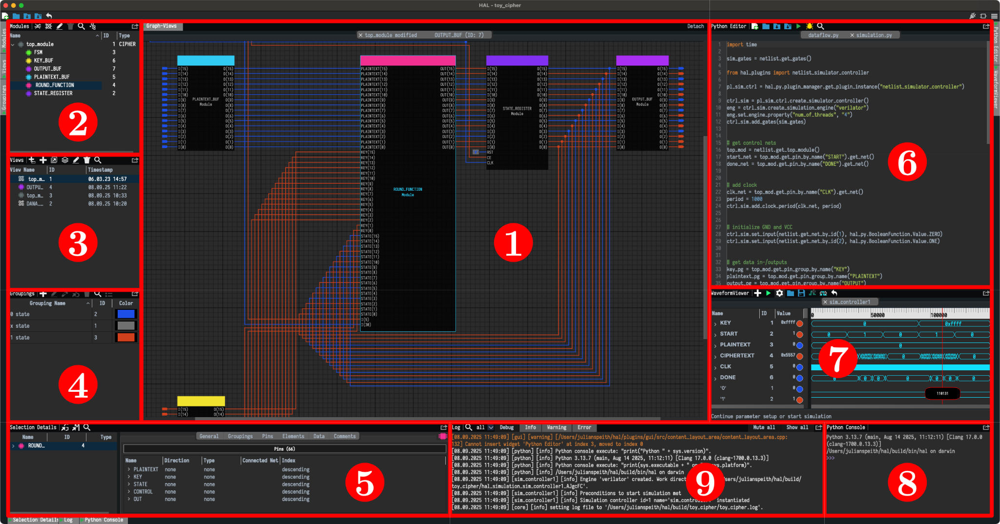

HAL Screenshot

To get information about the purpose of the widget click on interactive screenshot or select from list below
- Graph View
- Modules Hierarchy
- View Management
- Groupings
- Selection Details
- Python Editor
- Waveform Viewer
- Python Console
- Log Messages